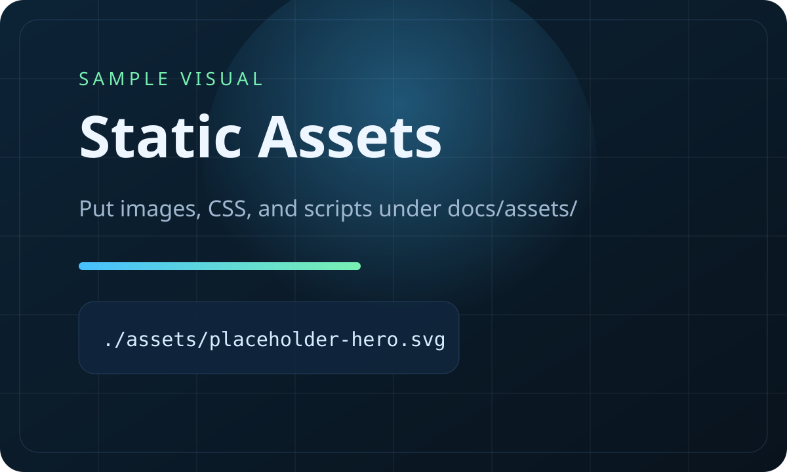

Brand
商品やサービス紹介向けのシンプルな情報整理に向きます。
Placeholderこちらは 2 つ目の個別サイトです。テーマや文言を変えても、同じ共有 CSS を使って素早く増やせます。

共通の見た目を使いながら、中身だけ別サイト用に差し替えるイメージです。
たとえばブランド紹介、イベント告知、ポートフォリオなど用途ごとに別サイトを切り分けられます。
商品やサービス紹介向けのシンプルな情報整理に向きます。
Placeholderイベント告知ページを分けて置きたいときにも扱いやすいです。
Placeholder個人用の紹介ページを別 URL で並べて持つこともできます。
Placeholder一番手早いのは `site-a` か `site-b` のフォルダを複製して、名前とリンクだけ調整する方法です。